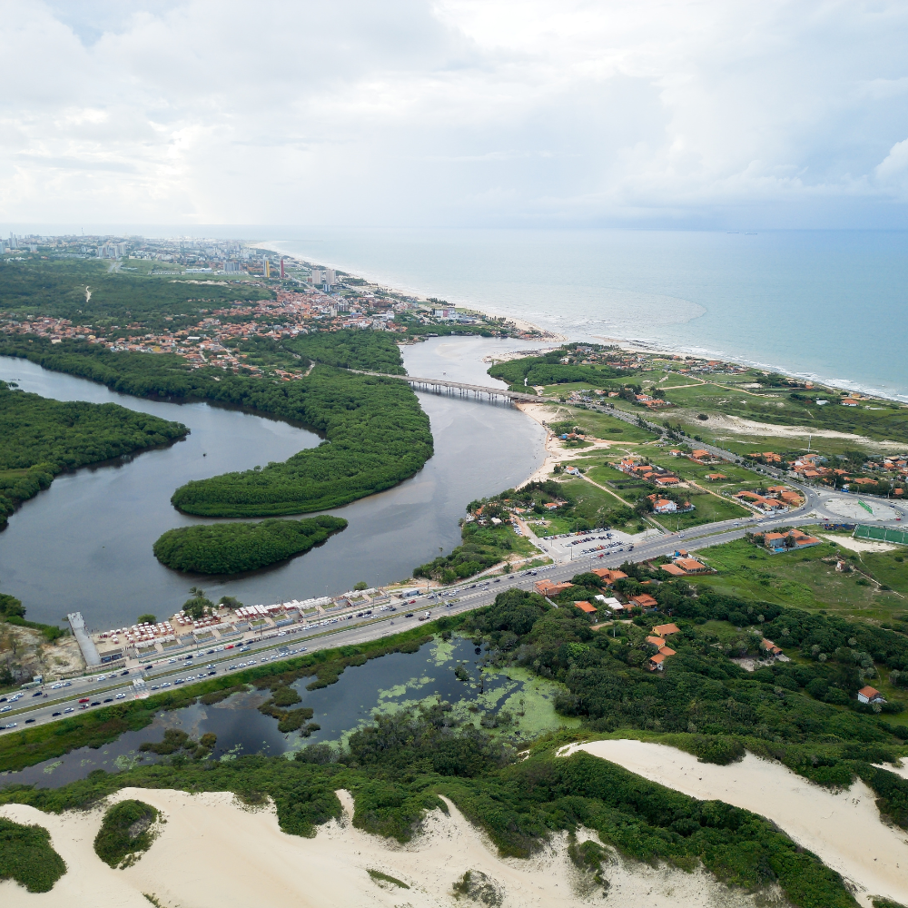

O Rio Grande do Sul é uma terra de identidade marcante e tradições profundas, onde a figura do gaúcho e a cultura dos pampas moldam o espírito de um povo orgulhoso de sua história. Localizado no extremo sul do Brasil, o estado combina a sofisticação urbana de Porto Alegre com o charme europeu da Serra Gaúcha e a vastidão das estâncias rurais, sendo um pilar fundamental da economia nacional através de sua robusta produção agropecuária e industrial. Das paisagens geladas que convidam ao vinho e ao chocolate em Gramado até o ritual diário do chimarrão e do churrasco, o território sul-riograndense destaca-se pela sua resiliência e por uma herança cultural que celebra a liberdade e a conexão com a terra.

Voltar